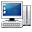
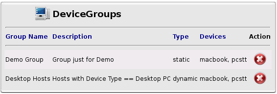
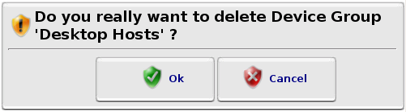
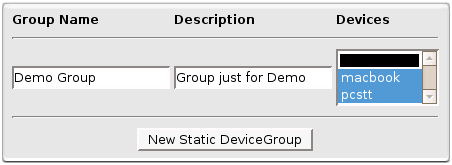
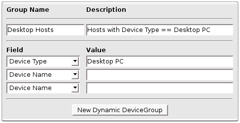

 DeviceGroups
Here you can configure your DeviceGroups.
DeviceGroups are used in  Alerts /
Alerts /  Reports creation and
Reports creation and  Logs Viewers to handle more than one Device in one shot.
Logs Viewers to handle more than one Device in one shot.

DeviceGroups List
Every time you will remove a DeviceGroup, a dialog window will ask you to confirm.

Dialog Window Confirmation
Static DeviceGroup
A 'Static DeviceGroup' is a group build on an arbitrary selection of Devices from all Devices in Octopussy.

Static DeviceGroup with 2 Devices
Dynamic DeviceGroup
A 'Dynamic DeviceGroup' is a group build on Devices that have the same values for specified fields.

Dynamic DeviceGroup where Devices need to have "Desktop PC" as DeviceType